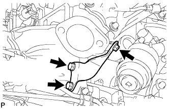

ВЫПУСКНОЙ КОЛЛЕКТОР > СНЯТИЕ |
| 1. СНИМИТЕ УПЛОТНЕНИЕ ФАРТУКА ПРАВОГО ПЕРЕДНЕГО КРЫЛА |
 |
Освободите 5 фиксаторов и снимите уплотнение фартука переднего крыла.
| 2. СНИМИТЕ УПЛОТНЕНИЕ № 1 МЕЖДУ ФАРТУКОМ ПРАВОГО ПЕРЕДНЕГО КРЫЛА И РАМОЙ |
 |
Освободите 5 фиксаторов и снимите уплотнение между фартуком переднего крыла и рамой.
| 3. СНИМИТЕ КРЫШКУ ВОЗДУШНОГО ФИЛЬТРА СО ШЛАНГОМ |
 |
Открепите 3 зажима и отсоедините разъем датчика массового расхода воздуха.
 |
Отцепите 4 зажима.
Ослабьте хомут шланга и снимите воздушный фильтр и шланг.
| 4. СНИМИТЕ КОРПУС ВОЗДУШНОГО ФИЛЬТРА |
 |
Снимите фильтрующий элемент воздушного фильтра.
Выверните 3 болта и снимите корпус воздушного фильтра.
| 5. СНИМИТЕ КЛАПАН ПЕРЕКЛЮЧЕНИЯ ПОДАЧИ ВОЗДУХА В СБОРЕ |
Снимите клапан переключения подачи воздуха (Нажмите здесь).
| 6. СНИМИТЕ ПРИЕМНУЮ ТРУБУ В СБОРЕ |
Отсоедините разъем датчика состава топливовоздушной смеси и освободите зажим жгута проводов.
Отсоедините разъем подогреваемого кислородного датчика и освободите зажим жгута проводов.
Для 3-дверных моделей:
Выверните 4 болта и снимите 2 пружины сжатия.
Для 5-дверных моделей:
Выверните 4 болта и снимите 4 пружины сжатия.
Снимите приемную трубу с опоры трубы.
| 7. СНИМИТЕ ОПОРУ КОЛЛЕКТОРА |
|  |
Отверните 3 болта и снимите опору коллектора.
| 8. СНИМИТЕ ВЫПУСКНОЙ КОЛЛЕКТОР |
 |
Отверните 8 гаек и снимите выпускной коллектор.
Снимите прокладку.